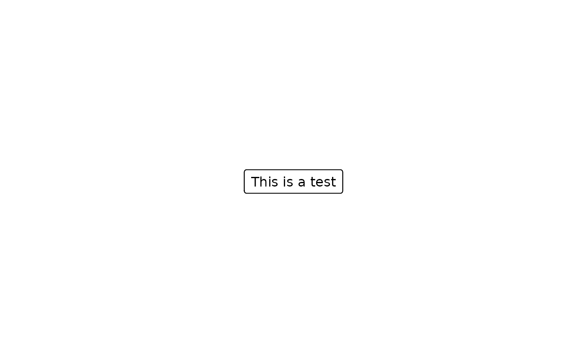

Create a grob with text inside. To extract the units describing grob boundary location can be accessed with grobX and grobY. The units describing width and height can be accessed with grobWidth and grobHeight.
Arguments
- text
A character text to be passed to textGrob.
- x
A number or unit object specifying x-location.
- y
A number or unit object specifying y-location.
- just
The justification of the text, `"left"`, `"right` and `"center"`. See textGrob for more details.
- txt_gp
An object of class gpar style to be applied to the text. Defaults are read from
set_consort_defaults. For example, to set a font size for all text inside boxes, useset_consort_defaults(txt_gp = gpar(cex = 0.8)).- leftrotate
If the text box will be rotated 90 degrees counter-clockwise. Default is
FALSE.- box_fn
Function to create box for the text. Parameters of `x=0.5`, `y=0.5` and `box_gp` will be passed to this function and return a
grobobject.- box_gp
An object of class gpar style to be applied to the box.
- name
A character identifier.
- ...
Parameters passed to
textbox
Examples
fg <- textbox(text = "This is a test")
grid::grid.draw(fg)
grid.textbox(text = "This is a test")
grid.textbox(text = "This is a test")
